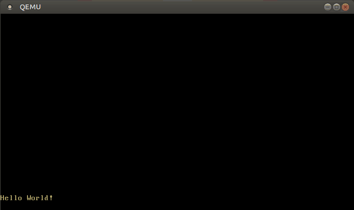

硬件中断
翻译内容： 这是对原文章 Hardware Interrupts 的社区中文翻译。它可能不完整，过时或者包含错误。可以在 这个 Issue 上评论和提问！
翻译者： @liuyuran. With contributions from @JiangengDong.
在本文中，我们会对可编程的中断控制器进行设置，以将硬件中断转发给CPU，而要处理这些中断，只需要像处理异常一样在中断描述符表中加入一个新条目即可，在这里我们会以获取周期计时器的中断和获取键盘输入为例进行讲解。
这个系列的 blog 在GitHub上开放开发，如果你有任何问题，请在这里开一个 issue 来讨论。当然你也可以在底部留言。你可以在post-07找到这篇文章的完整源码。
目录
🔗前言
中断是其他硬件对CPU发送通知的一种方式，所以除了使用 轮询 进程在内核层面定时检查键盘输入以外，由键盘主动通知内核按键输入的结果也是个可行的方案。相比之下，后者可能还更加有用，此时内核只需要处理接收到的事件即可。这也可以极大降低系统的反应延时，因为内核无需等待下一次轮询周期。
根据常识，将所有硬件直连CPU是不可能的，所以需要一个统一的 中断控制器 对所有设备中断进行代理，并由它间接通知CPU：
____________ _____
Timer ------------> | | | |
Keyboard ---------> | Interrupt |---------> | CPU |
Other Hardware ---> | Controller | |_____|
Etc. -------------> |____________|
绝大多数中断控制器都是可编程的，也就是说可以自行设定中断的优先级，比如我们可以为计时器中断设定比键盘中断更高的优先级，以保证系统时间的精确性。
和异常不同，硬件中断完全是 异步的 ，也就是说它们可以在任何时候发生，且时序完全独立于正在运行的代码。所以我们的内核里就突然添加了一种异步的逻辑形式，并且也引入了所有潜在的与异步逻辑相关的Bug可能性。此时Rust严格的所有权模型此时就开始具备优势，因为它从根本上禁止了可变的全局状态。但尽管如此，死锁很难完全避免，这个问题我们会在文章稍后的部分进行说明。
🔗The 8259 PIC
Intel 8259 是一款于1976年发布的可编程中断控制器（PIC），事实上，它已经被更先进的 APIC 替代很久了，但其接口依然出于兼容问题被现有系统所支持。但是 8259 PIC 的设置方式比起APIC实在简单太多了，所以我们先以前者为例解说一下基本原理，在下一篇文章中再切换为APIC。
8529具有8个中断管脚和一个和CPU通信的独立管脚，而当年的典型系统一般会安装两片 8259 PIC ，一个作为主芯片，另一个则作为副芯片，就像下面这样：
____________ ____________
Real Time Clock --> | | Timer -------------> | |
ACPI -------------> | | Keyboard-----------> | | _____
Available --------> | Secondary |----------------------> | Primary | | |
Available --------> | Interrupt | Serial Port 2 -----> | Interrupt |---> | CPU |
Mouse ------------> | Controller | Serial Port 1 -----> | Controller | |_____|
Co-Processor -----> | | Parallel Port 2/3 -> | |
Primary ATA ------> | | Floppy disk -------> | |
Secondary ATA ----> |____________| Parallel Port 1----> |____________|
上图展示了中断管脚的典型逻辑定义，我们可以看到，实际上可定义的管脚共有15个，例如副PIC的4号管脚被定义为了鼠标。
每个控制器都可以通过两个 I/O 端口 进行配置，一个是“指令”端口，另一个是“数据”端口。对于主控制器，端口地址是 0x20（指令）和 0x21（数据），而对于副控制器，端口地址是 0xa0（指令）和 0xa1（数据）。要查看更多关于PIC配置的细节，请参见 article on osdev.org。
🔗实现
PIC默认的配置其实是无法使用的，因为它仅仅是将0-15之间的中断向量编号发送给了CPU，然而这些编号已经用在了CPU的异常编号中了，比如8号代指 double fault 异常。要修复这个错误，我们需要对PIC中断序号进行重映射，新的序号只需要避开已被定义的CPU异常即可，CPU定义的异常数量有32个，所以通常会使用32-47这个区段。
我们需要通过往指令和数据端口写入特定数据才能对配置进行编程，幸运的是已经有了一个名叫 pic8259 的crate封装了这些东西，我们无需自己去处理这些初始化方面的细节。
如果你十分好奇其中的细节，这里是 它的源码，他的内部逻辑其实十分简洁，而且具备完善的文档。
我们可以这样将 crate 作为依赖加入工程中：
# in Cargo.toml
[dependencies]
pic8259 = "0.10.1"
这个 crate 提供的主要抽象结构就是 ChainedPics，用于映射上文所说的主副PIC的映射布局，它可以这样使用：
// in src/interrupts.rs
use pic8259::ChainedPics;
use spin;
pub const PIC_1_OFFSET: u8 = 32;
pub const PIC_2_OFFSET: u8 = PIC_1_OFFSET + 8;
pub static PICS: spin::Mutex<ChainedPics> =
spin::Mutex::new(unsafe { ChainedPics::new(PIC_1_OFFSET, PIC_2_OFFSET) });
我们成功将PIC的中断编号范围设定为了32–47。我们使用 Mutex 容器包裹了 ChainedPics，这样就可以通过（lock 函数）拿到被定义为安全的变量修改权限，我们在下文会用到这个权限。ChainedPics::new 处于unsafe块，因为错误的偏移量可能会导致一些未定义行为。
那么现在，我们就可以在 init 函数中初始化 8259 PIC 配置了：
// in src/lib.rs
pub fn init() {
gdt::init();
interrupts::init_idt();
unsafe { interrupts::PICS.lock().initialize() }; // new
}
我们使用 initialize 函数进行PIC的初始化。正如 ChainedPics::new ，这个函数也是 unsafe 的，因为里面的不安全逻辑可能会导致PIC配置失败，进而出现一些未定义行为。
如果一切顺利，我们在运行 cargo run 后应当能看到诸如 “It did not crash” 此类的输出信息。
🔗启用中断
不过现在什么都不会发生，因为CPU配置里面中断还是禁用状态呢，也就是说CPU现在根本不会监听来自中断控制器的信息，即任何中断都无法到达CPU。我们来启用它：
// in src/lib.rs
pub fn init() {
gdt::init();
interrupts::init_idt();
unsafe { interrupts::PICS.lock().initialize() };
x86_64::instructions::interrupts::enable(); // new
}
x86_64 crate 中的 interrupts::enable 会执行特殊的 sti (“set interrupts”) 指令来启用外部中断。当我们试着执行 cargo run 后，double fault 异常几乎是立刻就被抛出了：

其原因就是硬件计时器（准确的说，是Intel 8253）默认是被启用的，所以在启用中断控制器之后，CPU开始接收到计时器中断信号，而我们又并未设定相对应的处理函数，所以就抛出了 double fault 异常。
🔗处理计时器中断
我们已经知道 计时器组件 使用了主PIC的0号管脚，根据上文中我们定义的序号偏移量32，所以计时器对应的中断序号也是32。但是不要将32硬编码进去，我们将其存储到枚举类型 InterruptIndex 中：
// in src/interrupts.rs
#[derive(Debug, Clone, Copy)]
#[repr(u8)]
pub enum InterruptIndex {
Timer = PIC_1_OFFSET,
}
impl InterruptIndex {
fn as_u8(self) -> u8 {
self as u8
}
fn as_usize(self) -> usize {
usize::from(self.as_u8())
}
}
这是一个 C语言风格的枚举，我们可以为每个枚举值指定其对应的数值，repr(u8) 开关使枚举值对应的数值以 u8 格式进行存储，这样未来我们可以在这里加入更多的中断枚举。
那么开始为计时器中断添加一个处理函数：
// in src/interrupts.rs
use crate::print;
lazy_static! {
static ref IDT: InterruptDescriptorTable = {
let mut idt = InterruptDescriptorTable::new();
idt.breakpoint.set_handler_fn(breakpoint_handler);
[…]
idt[InterruptIndex::Timer.as_usize()]
.set_handler_fn(timer_interrupt_handler); // new
idt
};
}
extern "x86-interrupt" fn timer_interrupt_handler(
_stack_frame: InterruptStackFrame)
{
print!(".");
}
timer_interrupt_handler 和错误处理函数具有相同的函数签名，这是因为CPU对异常和外部中断的处理方式是相同的（除了个别异常会传入错误码以外）。InterruptDescriptorTable 结构实现了 IndexMut trait，所以我们可以通过序号来单独修改某一个条目。
在我们刚刚写好的处理函数中，我们会往屏幕上输出一个点，随着计时器中断周期性触发，我们应该能看到每一个计时周期过后屏幕上都会多出一个点。然而事实却并不是如此，我们只能在屏幕上看到一个点：

🔗结束中断
这是因为PIC还在等着我们的处理函数返回 “中断结束” (EOI) 信号。该信号会通知控制器终端已处理，系统已准备好接收下一个中断。所以如果始终不发送EOI信号，那么PIC就会认为我们还在一直处理第一个计时器中断，然后暂停了后续的中断信号发送，直到接收到EOI信号。
要发送EOI信号，我们可以再使用一下 PICS：
// in src/interrupts.rs
extern "x86-interrupt" fn timer_interrupt_handler(
_stack_frame: InterruptStackFrame)
{
print!(".");
unsafe {
PICS.lock()
.notify_end_of_interrupt(InterruptIndex::Timer.as_u8());
}
}
notify_end_of_interrupt 会自行判断中断信号发送的源头（主PIC或者副PIC），并使用指令和数据端口将信号发送到目标控制器。当然，如果是要发送到副PIC，那么结果上必然等同于同时发送到两个PIC，因为副PIC的输入管脚连在主PIC上面。
请注意，这里的中断编码一定不可以写错，不然可能会导致某个中断信号迟迟得不到回应导致系统整体挂起。这也是该函数被标记为不安全的原因。
现在我们再次运行 cargo run，就可以看到屏幕上开始正常输出点号了：

🔗配置计时器
我们所使用的硬件计时器叫做 可编程周期计时器 （PIT），就如同字面上的意思一样，其两次中断之间的间隔是可配置的。当然，不会在此展开说，因为我们很快就会使用 APIC计时器 来代替它，但是你可以在OSDev wiki中找到一些关于配置PIT计时器的拓展文章。
🔗死锁
现在，我们的内核里就出现了一种全新的异步逻辑：计时器中断是异步的，所以它可能会在任何时候中断 _start 函数的运行。幸运的是Rust的所有权体系为我们在编译期避免了相当比例的bug，其中最典型的就是死锁 —— 当一个线程试图使用一个永远不会被释放的锁时，这个线程就会被永久性挂起。
我们可以在内核里主动引发一次死锁看看，请回忆一下，我们的 println 宏调用了 vga_buffer::_print 函数，而这个函数又使用了 WRITER 变量，该变量被定义为带同步锁的变量：
// in src/vga_buffer.rs
[…]
#[doc(hidden)]
pub fn _print(args: fmt::Arguments) {
use core::fmt::Write;
WRITER.lock().write_fmt(args).unwrap();
}
获取到 WRITER 变量的锁后，调用其内部的 write_fmt 函数，然后在结尾隐式解锁该变量。但是假如在函数执行一半的时候，中断处理函数触发，同样试图打印日志的话：
| Timestep | _start | interrupt_handler |
|---|---|---|
| 0 | calls println! | |
| 1 | print locks WRITER | |
| 2 | interrupt occurs, handler begins to run | |
| 3 | calls println! | |
| 4 | print tries to lock WRITER (already locked) | |
| 5 | print tries to lock WRITER (already locked) | |
| … | … | |
| never | unlock WRITER |
WRITER 被锁定，所以中断处理函数就会一直等待到它被解锁为止，然而后续永远不会发生了，因为只有当中断处理函数返回，_start 函数才会继续运行，WRITER 才可能被解锁，所以整个系统就这么挂起了。
🔗引发死锁
基于这个原理，我们可以通过在 _start 函数中构建一个输出循环来很轻易地触发死锁：
// in src/main.rs
#[no_mangle]
pub extern "C" fn _start() -> ! {
[…]
loop {
use blog_os::print;
print!("-"); // new
}
}
在QEMU中运行后，输出是这样的：

我们可以看到，这段程序只输出了有限的中划线，在第一次计时器中断触发后就不再动弹了，这是因为计时器中断对应的处理函数触发了输出宏中潜在的死锁，这也是为什么我们没有在上面的输出中看到点号的原因。
由于计时器中断是完全异步的，所以每次运行能够输出的中划线数量都是不确定的，这种特性也导致和并发相关的bug非常难以调试。
🔗修复死锁
要避免死锁，我们可以在 Mutex 被锁定时禁用中断：
// in src/vga_buffer.rs
/// Prints the given formatted string to the VGA text buffer
/// through the global `WRITER` instance.
#[doc(hidden)]
pub fn _print(args: fmt::Arguments) {
use core::fmt::Write;
use x86_64::instructions::interrupts; // new
interrupts::without_interrupts(|| { // new
WRITER.lock().write_fmt(args).unwrap();
});
}
without_interrupts 函数可以使一个 闭包 代码块在无中断环境下执行，由此我们可以让 Mutex 变量在锁定期间的执行逻辑不会被中断信号打断。再次运行我们的内核，此时程序就不会被挂起了。（然而我们依然不会看到任何点号，因为输出速度实在是太快了，试着降低一下输出速度就可以了，比如在循环里插入一句 for _ in 0..10000 {}。）
我们也可以在串行输出函数里也加入同样的逻辑来避免死锁：
// in src/serial.rs
#[doc(hidden)]
pub fn _print(args: ::core::fmt::Arguments) {
use core::fmt::Write;
use x86_64::instructions::interrupts; // new
interrupts::without_interrupts(|| { // new
SERIAL1
.lock()
.write_fmt(args)
.expect("Printing to serial failed");
});
}
但请注意，禁用中断不应是被广泛使用的手段，它可能会造成中断的处理延迟增加，比如操作系统是依靠中断信号进行计时的。因此，中断仅应在极短的时间内被禁用。
🔗修复竞态条件
如果你运行 cargo test 命令，则会发现test_println_output 测试执行失败：
> cargo test --lib
[…]
Running 4 tests
test_breakpoint_exception...[ok]
test_println... [ok]
test_println_many... [ok]
test_println_output... [failed]
Error: panicked at 'assertion failed: `(left == right)`
left: `'.'`,
right: `'S'`', src/vga_buffer.rs:205:9
其原因就是测试函数和计时器中断处理函数出现了 竞态条件，测试函数是这样的：
// in src/vga_buffer.rs
#[test_case]
fn test_println_output() {
let s = "Some test string that fits on a single line";
println!("{}", s);
for (i, c) in s.chars().enumerate() {
let screen_char = WRITER.lock().buffer.chars[BUFFER_HEIGHT - 2][i].read();
assert_eq!(char::from(screen_char.ascii_character), c);
}
}
该测试将一串字符打印到VGA缓冲区，并通过一个循环检测 buffer_chars 数组的内容。竞态条件出现的原因就是在 println 和检测逻辑之间触发了计时器中断，其处理函数同样调用了输出语句。不过这并非危险的 数据竞争，该种竞争可以被Rust语言在编译期完全避免。如果你对此感兴趣，可以查阅一下 Rustonomicon。
要修复这个问题，我们需要让 WRITER 加锁的范围扩大到整个测试函数，使计时器中断处理函数无法输出 .，就像这样：
// in src/vga_buffer.rs
#[test_case]
fn test_println_output() {
use core::fmt::Write;
use x86_64::instructions::interrupts;
let s = "Some test string that fits on a single line";
interrupts::without_interrupts(|| {
let mut writer = WRITER.lock();
writeln!(writer, "\n{}", s).expect("writeln failed");
for (i, c) in s.chars().enumerate() {
let screen_char = writer.buffer.chars[BUFFER_HEIGHT - 2][i].read();
assert_eq!(char::from(screen_char.ascii_character), c);
}
});
}
我们进行了如下修改：
- 我们使用
lock()函数显式加锁，然后将println改为writeln宏，以此绕开输出必须加锁的限制。 - 为了避免死锁，我们同时在测试函数执行期间禁用中断，否则中断处理函数可能会意外被触发。
- 为了防止在测试执行前计时器中断被触发所造成的干扰，我们先输出一句
\n，即可避免行首出现多余的.造成的干扰。
经过以上修改，cargo test 就可以正确运行了。
好在这是一种十分无害的竞态条件，仅仅会导致测试失败，但如你所想，其它形式的竞态条件可能会更加难以调试。幸运的是，更加恶性的数据竞争已经被Rust从根本上避免了，大部分数据竞争都会造成无法预知的行为，比如系统崩溃，或者悄无声息的内存破坏。
🔗hlt 指令
目前我们在 _start 和 panic 函数的末尾都使用了一个空白的循环，这的确能让整体逻辑正常运行，但也会让CPU全速运转 —— 尽管此时并没有什么需要计算的工作。如果你在执行内核时打开任务管理器，便会发现QEMU的CPU占用率全程高达100%。
但是，我们可以让CPU在下一个中断触发之前休息一下，也就是进入休眠状态来节省一点点能源。[hlt instruction][hlt 指令] 可以让我们做到这一点，那就来用它写一个节能的无限循环：
// in src/lib.rs
pub fn hlt_loop() -> ! {
loop {
x86_64::instructions::hlt();
}
}
instructions::hlt 只是对应汇编指令的 薄包装，并且它是内存安全的，没有破坏内存的风险。
现在我们来试着在 _start 和 panic 中使用 hlt_loop：
// in src/main.rs
#[no_mangle]
pub extern "C" fn _start() -> ! {
[…]
println!("It did not crash!");
blog_os::hlt_loop(); // new
}
#[cfg(not(test))]
#[panic_handler]
fn panic(info: &PanicInfo) -> ! {
println!("{}", info);
blog_os::hlt_loop(); // new
}
接下来再更新一下 lib.rs ：
// in src/lib.rs
/// Entry point for `cargo test`
#[cfg(test)]
#[no_mangle]
pub extern "C" fn _start() -> ! {
init();
test_main();
hlt_loop(); // new
}
pub fn test_panic_handler(info: &PanicInfo) -> ! {
serial_println!("[failed]\n");
serial_println!("Error: {}\n", info);
exit_qemu(QemuExitCode::Failed);
hlt_loop(); // new
}
再次在QEMU中执行我们的内核，CPU使用率已经降低到了比较低的水平了。
🔗键盘输入
现在，我们已经知道了如何接收外部设备的中断信号，我们可以进一步对键盘添加支持，由此我们可以与内核进行交互。
就如同硬件计时器一样，键盘控制器也是默认启用的，所以当你敲击键盘上某个按键时，键盘控制器就会经由PIC向CPU发送中断信号。然而CPU此时是无法在IDT找到相关的中断处理函数的，所以 double fault 异常会被抛出。
所以我们需要为键盘中断添加一个处理函数，它十分类似于计时器中断处理的实现，只不过需要对中断编号做出一点小小的修改：
// in src/interrupts.rs
#[derive(Debug, Clone, Copy)]
#[repr(u8)]
pub enum InterruptIndex {
Timer = PIC_1_OFFSET,
Keyboard, // new
}
lazy_static! {
static ref IDT: InterruptDescriptorTable = {
let mut idt = InterruptDescriptorTable::new();
idt.breakpoint.set_handler_fn(breakpoint_handler);
[…]
// new
idt[InterruptIndex::Keyboard.as_usize()]
.set_handler_fn(keyboard_interrupt_handler);
idt
};
}
extern "x86-interrupt" fn keyboard_interrupt_handler(
_stack_frame: InterruptStackFrame)
{
print!("k");
unsafe {
PICS.lock()
.notify_end_of_interrupt(InterruptIndex::Keyboard.as_u8());
}
}
上文 提到，键盘使用的是主PIC的1号管脚，在CPU的中断编号为33（1 + 偏移量32）。我们需要在 InterruptIndex 枚举类型里添加一个 Keyboard，但是无需显式指定对应值，因为在默认情况下，它的对应值是上一个枚举对应值加一也就是33。在处理函数中，我们先输出一个 k，并发送结束信号来结束中断。
现在当我们按下任意一个按键，就会在屏幕上输出一个 k，然而这只会生效一次，因为键盘控制器在我们 获取扫描码 之前，是不会发送下一个中断的。
🔗读取扫描码
要找到哪个按键被按下，我们还需要询问一下键盘控制器，我们可以从 PS/2 控制器（即地址为 0x60 的 I/O端口）的数据端口获取到该信息：
// in src/interrupts.rs
extern "x86-interrupt" fn keyboard_interrupt_handler(
_stack_frame: InterruptStackFrame)
{
use x86_64::instructions::port::Port;
let mut port = Port::new(0x60);
let scancode: u8 = unsafe { port.read() };
print!("{}", scancode);
unsafe {
PICS.lock()
.notify_end_of_interrupt(InterruptIndex::Keyboard.as_u8());
}
}
我们使用了 x86_64 crate 中的 Port 来从键盘数据端口中读取名为 [扫描码] 的随着按键按下/释放而不断变化的数字。我们暂且不处理它，只是在屏幕上打印出来：

在上图中，演示的正是缓慢输入 123 的结果。我们可以看到，相邻的按键具备相邻的扫描码，而按下按键和松开按键也会出现不同的扫描码，那么问题来了，我们该如何对这些扫描码进行译码？
🔗扫描码转义
关于按键与键位码之间的映射关系，目前存在三种不同的标准（所谓的 扫描码映射集）。三种标准都可以追溯到早期的IBM电脑键盘：IBM XT、 IBM 3270 PC和IBM AT。好在之后的电脑并未另起炉灶定义新的扫描码映射集，但也对现有类型进行模拟并加以扩展，如今的绝大多数键盘都可以模拟成这三种类型之一。
默认情况下，PS/2 键盘会模拟Set-1（XT），在该布局下，扫描码的低7位表示按键，而其他的比特位则定义了是按下（0）还是释放（1）。不过这些按键并非都存在于原本的 IBM XT 键盘上，比如小键盘的回车键，此时就会连续生成两个扫描码：0xe0 以及一个自定义的代表该键位的数字。OSDev Wiki 可以查阅到Set-1下的扫描码对照表。
要将扫描码译码成按键，我们可以用一个match匹配语句：
// in src/interrupts.rs
extern "x86-interrupt" fn keyboard_interrupt_handler(
_stack_frame: InterruptStackFrame)
{
use x86_64::instructions::port::Port;
let mut port = Port::new(0x60);
let scancode: u8 = unsafe { port.read() };
// new
let key = match scancode {
0x02 => Some('1'),
0x03 => Some('2'),
0x04 => Some('3'),
0x05 => Some('4'),
0x06 => Some('5'),
0x07 => Some('6'),
0x08 => Some('7'),
0x09 => Some('8'),
0x0a => Some('9'),
0x0b => Some('0'),
_ => None,
};
if let Some(key) = key {
print!("{}", key);
}
unsafe {
PICS.lock()
.notify_end_of_interrupt(InterruptIndex::Keyboard.as_u8());
}
}
以上代码可以对数字按键0-9进行转义，并忽略其他键位。具体到程序逻辑中，就是使用 match 匹配映射数字0-9，对于其他扫描码则返回 None，然后使用 if let 语句对 key 进行解构取值，在这个语法中，代码块中的 key 会 遮蔽 掉代码块外的同名 Option 型变量。
现在我们就可以向控制台写入数字了：

其他扫描码也可以通过同样的手段进行译码，不过真的很麻烦，好在 pc-keyboard crate 已经帮助我们实现了Set-1和Set-2的译码工作，所以无需自己去实现。所以我们只需要将下述内容添加到 Cargo.toml，并在 lib.rs 里进行引用：
# in Cargo.toml
[dependencies]
pc-keyboard = "0.5.0"
现在我们可以使用新的crate对 keyboard_interrupt_handler 进行改写：
// in/src/interrupts.rs
extern "x86-interrupt" fn keyboard_interrupt_handler(
_stack_frame: InterruptStackFrame)
{
use pc_keyboard::{layouts, DecodedKey, HandleControl, Keyboard, ScancodeSet1};
use spin::Mutex;
use x86_64::instructions::port::Port;
lazy_static! {
static ref KEYBOARD: Mutex<Keyboard<layouts::Us104Key, ScancodeSet1>> =
Mutex::new(Keyboard::new(layouts::Us104Key, ScancodeSet1,
HandleControl::Ignore)
);
}
let mut keyboard = KEYBOARD.lock();
let mut port = Port::new(0x60);
let scancode: u8 = unsafe { port.read() };
if let Ok(Some(key_event)) = keyboard.add_byte(scancode) {
if let Some(key) = keyboard.process_keyevent(key_event) {
match key {
DecodedKey::Unicode(character) => print!("{}", character),
DecodedKey::RawKey(key) => print!("{:?}", key),
}
}
}
unsafe {
PICS.lock()
.notify_end_of_interrupt(InterruptIndex::Keyboard.as_u8());
}
}
首先我们使用 lazy_static 宏创建一个受到Mutex同步锁保护的 Keyboard 对象，初始化参数为美式键盘布局以及Set-1。至于 HandleControl，它可以设定为将 ctrl+[a-z] 映射为Unicode字符 U+0001 至 U+001A，但我们不想这样，所以使用了 Ignore 选项让 ctrl 仅仅表现为一个正常键位。
对于每一个中断，我们都会为 KEYBOARD 加锁，从键盘控制器获取扫描码并将其传入 add_byte 函数，并将其转化为 Option<KeyEvent> 结构。KeyEvent 包括了触发本次中断的按键信息，以及子动作是按下还是释放。
要处理KeyEvent，我们还需要将其传入 process_keyevent 函数，将其转换为人类可读的字符，若果有必要，也会对字符进行一些处理。典型例子就是，要判断 A 键按下后输入的是小写 a 还是大写 A，这要取决于shift键是否同时被按下。
进行这些修改之后，我们就可以正常输入英文了：

🔗配置键盘
PS/2 键盘可以配置的地方其实还有很多，比如设定它使用何种扫描码映射集，然而这篇文章已经够长了，就不在此展开说明，如果有兴趣，可以在OSDev wiki查看更详细的资料。
🔗小结
本文描述了如何启用并处理外部中断。我们学习了关于8259 PIC的主副布局、重映射中断编号以及结束中断信号的基础知识，实现了简单的硬件计时器和键盘的中断处理器，以及如何使用 hlt 指令让CPU休眠至下次接收到中断信号。
现在我们已经可以和内核进行交互，满足了创建简易控制台或简易游戏的基础条件。
🔗下文预告
计时器中断对操作系统而言至关重要，它可以使内核定期重新获得控制权，由此内核可以对线程进行调度，创造出多个线程并行执行的错觉。
然而在我们创建进程或线程之前，我们还需要解决内存分配问题。下一篇文章中，我们就会对内存管理进行阐述，以提供后续功能会使用到的基础设施。
评论
Do you have a problem, want to share feedback, or discuss further ideas? Feel free to leave a comment here! Please stick to English and follow Rust's code of conduct. This comment thread directly maps to a discussion on GitHub, so you can also comment there if you prefer.
Instead of authenticating the giscus application, you can also comment directly on GitHub.
请尽可能使用英语评论。